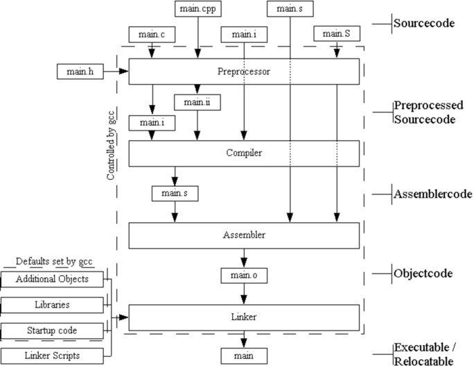

The TriCore Development Platform is a complete program suite to develop programs for microcontrollers of the Infineon TriCore [?] family. The TriCore Development Platform contains the programs to create an executable from high level language source code or assembler code. These programs are based on the development tools provided by the GNU project founded in the mid-1980s. The GNU development tools are set up in millions of installations worldwide and large projects like GNU/Linux are based on the reliability of the GNU tools.
These development tools are adapted by HighTec to create executables for TriCore microcontrollers. This ensures the stability and reliability of the GNU tools. Controlled by a common compiler driver program the TriCore Development Platform consists of the following programs:
The Preprocessor accepts files with C, C++ or assembler source code and outputs files with the preprocessed source code.
For a detailed description of the preprocessor see Listing 17.
While compiling the source code to assembler code several features of the compiler may be activated. These features are used to optimize the generated assembler code. These optimizations contain among other things the reordering of instructions for a better performance or workarounds for CPU errata. Additionally optional debug information is created. This information is used to inspect the executable, which is to be created by the linker, in the debugger later on.
The input file for the compiler must contain source code, which was preprocessed by the preprocessor. The compiler outputs assembler code, which conforms with the TriCore architecture Manual.
For a detailed description of the compiler see Listing 18.
For a detailed description of the assembler see Listing 19.
For a detailed description of the linker see Listing 20.
For a detailed description of the binutils see Listing 21.
While compiling high level language source files various intermediate files may be generated. By means of the file suffix the content of the file can be determined.
While compiling an input file the name of the file stays the same, only the suffix changes: If the file main.c is compiled to an object file, the linker outputs the file main.o.
It is convention to use the following file extensions:
| Table 1.2: File extensions |
Since the components of the TriCore Development Platform are interdependent it is necessary to invoke them correctly and in the right order. This is done by a common control program, sometimes called compiler driver. Besides setting some defaults for the invoked programs the compiler driver is responsible for passing the right in- and output files to the components of the toolchain. These defaults may be overwritten by user defined settings. This guarantees both the flexibility required by professional developers and the easiness of creating a program without having to think too much (see Part 1.1).

| Figure 1.1: The TriCore Development Platform |
Basing on the file extension of the file the control program gets as input it starts the toolchain with the appropriate tool. If no other options are set the toolchain is run until the linker has finished and the executable is created. The generated program may be directly loaded into the target hardware afterwards. However the TriCore Development Platform may be stopped after a defined state. This makes it possible to generate assembler code files from high level language files or object files to add to a library or to link together.
The TriCore Development Platform moreover includes programs to inspect the generated object code. These tools are, together with the assembler and the linker, the so called binutils.
Besides the programs directly involved in the creation of executables from source files the TriCore Development Platform comes with additional tools to manage the software build process or to debug the created program. Among these are: